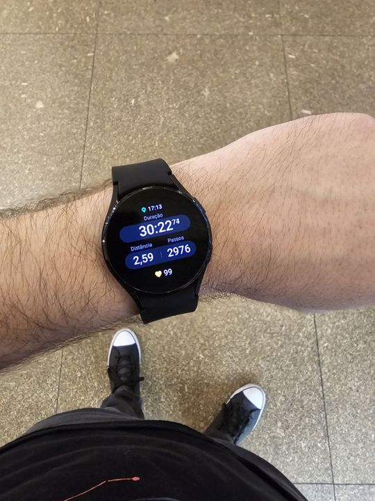
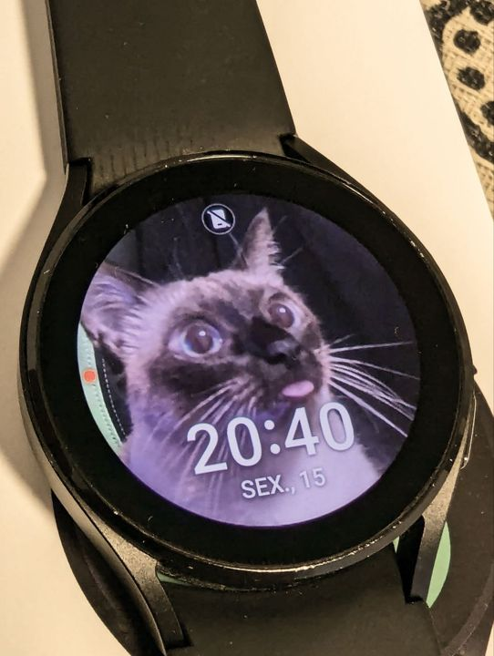

Smartwatch Samsung Galaxy Watch4
40 mm, preto, com caixa e carregador
R$ 460
Coisas que estou vendendo. Toque nas setas para ver mais fotos e em "Ver detalhes" para ler sobre cada uma.


40 mm, preto, com caixa e carregador
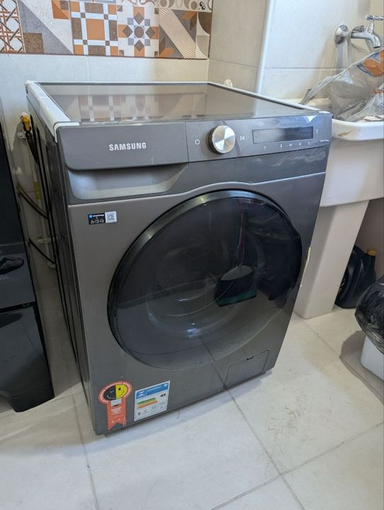


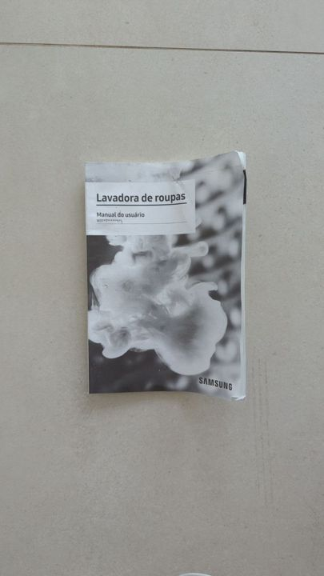
Inox, 127 V, comprada em outubro de 2024


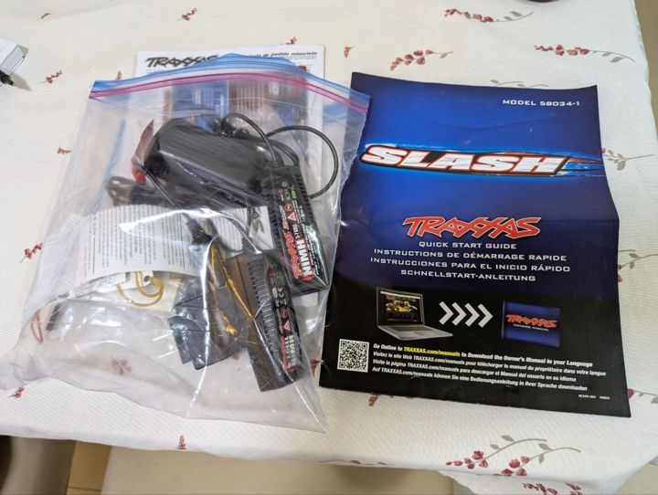
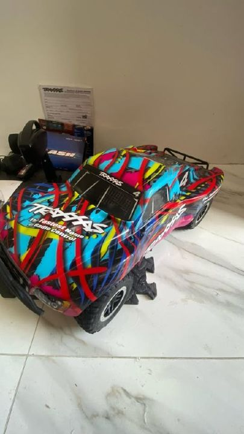

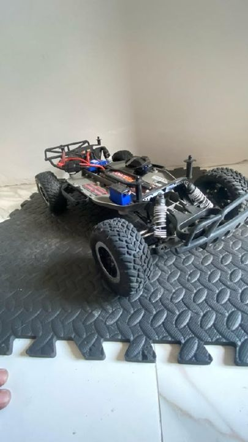
Elétrico, grande (escala 1/10), completo

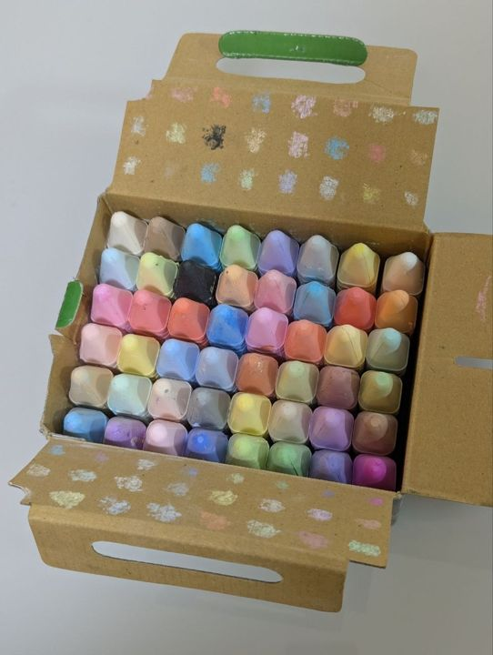
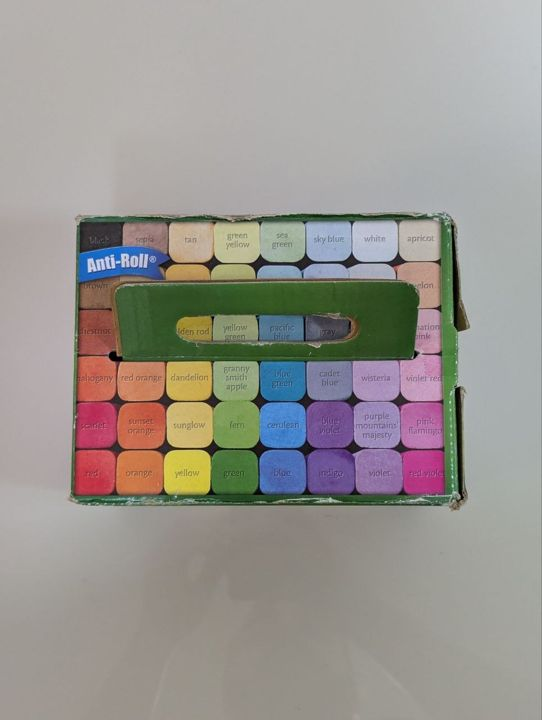
Caixa com 48 gizes laváveis
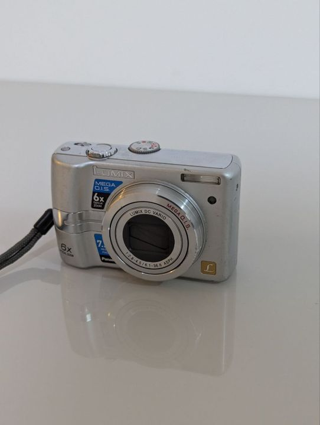
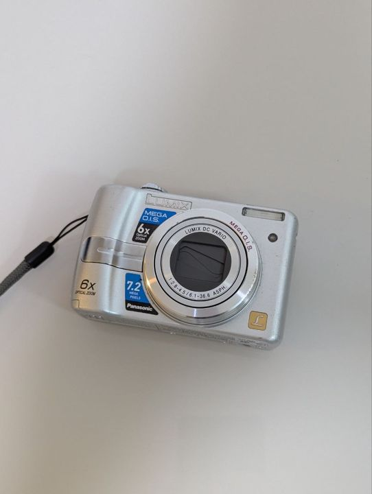
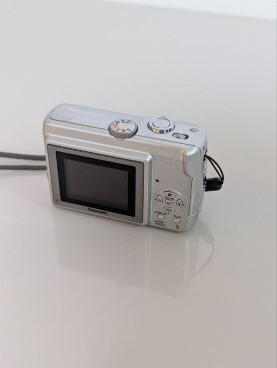

Modelo LZ6, zoom de 6x, funcionando
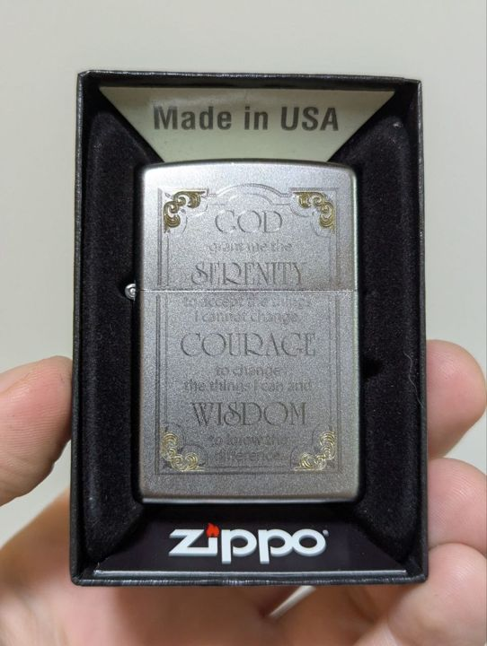

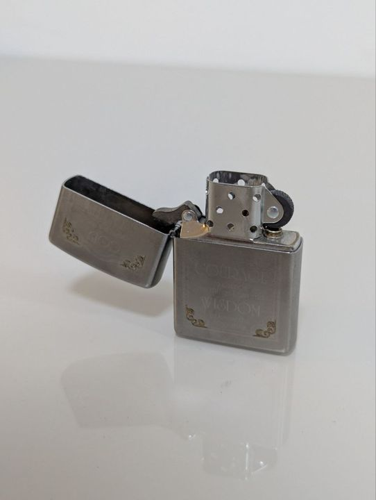
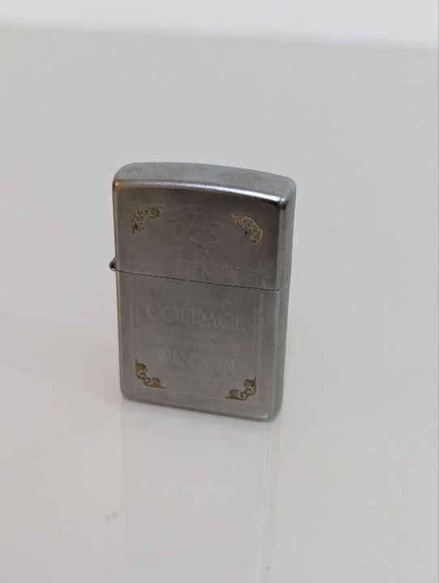

Original, Made in USA, na caixa


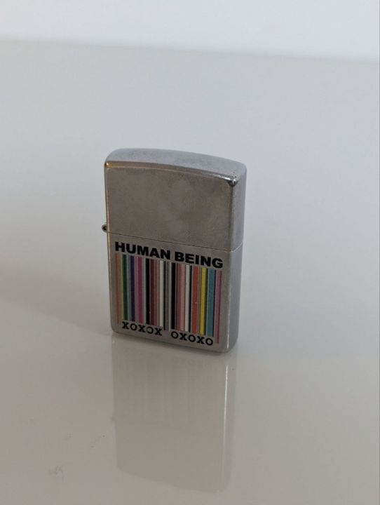

Original, Made in USA, na caixa

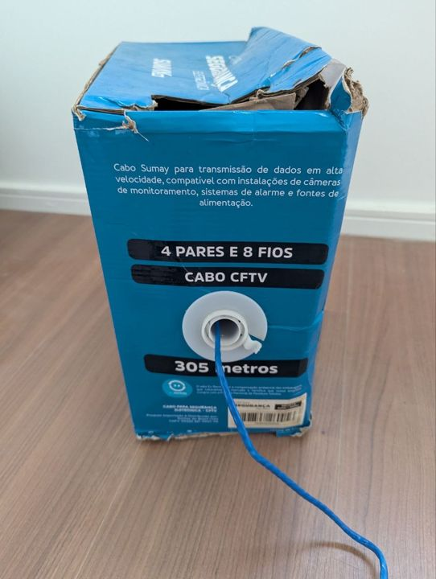
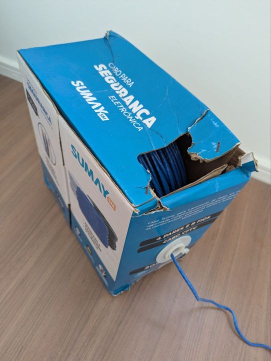

Caixa de 305 m já aberta, sobra bastante


Tamanho adulto, 13 polegadas


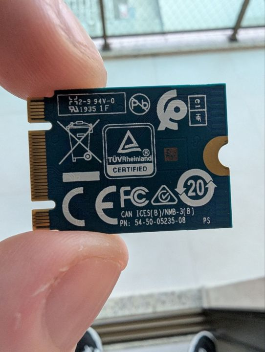
Western Digital, formato pequeno M.2 2230


Porcelana pintada, para pendurar na parede